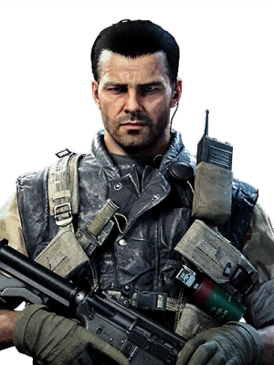

CHARACTER INFORMATION

Alex was born on June 3, 1933, in Fairbanks, Alaska. The geographical proximity of his home state to Communist Russia brought the threat of the Cold War much closer to his doorstep than most Americans. This was a key contributor to his fervent anti-Communist ideals and eventually led to him joining the Marines. He spent his youth by hunting the elk and grizzlies in the Alaskan wilderness with his father, a WWII veteran and recipient of the Purple Heart for wounds received during action at the Makin Atoll.
In 1958, he was recruited to SAD/SOG after an exemplary term of service with the Marines. Having served with distinction since joining the Agency, Mason has a long-standing friendship with many of his fellow Agency colleagues and shows a particular kinship with an operative named Frank Woods. Always itching for action, Mason's tendency towards impulsiveness is the one trait that may not have been completely "trained out of him." However, Woods was well aware about this and knows exactly when and how to rein him in.
In 1961, Mason was a member of a CIA assassination squad known as Operation 40. Mason and fellow Operation 40 members Joseph Bowman and Frank Woods infiltrated Cuba prior to the Bay of Pigs Invasion to carry Operation Zapata out which was the assassination of Fidel Castro. Using the distraction that was caused by the Bay of Pigs Invasion, Mason, Bowman and Woods raided a compound where Castro was reportedly living.